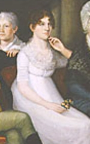

Sara Fondey Winne
 Sara Fondey was born in June 1784. She was the first child born to the marriage of John Fondey Jr. and his wife Cornelia Hun Fonda. The young beauty was captured in a family portrait done in 1803 when she was nineteen.
By the mid-1800s, she had married her childhood neighbor the somewhat older Jellis Winne, Jr. The marriage produced several children. Their eldest son became a prominent physician. We seek information on her married life and family.
These Winnes lived on North Market Street almost across the street from her childhood home. Her husband was a business associate of her father until John Fondey's death in 1814. Jellis Fonda enjoyed success in business and banking. They were pillars of the early nineteenth century North End community.
Sara's father's death in 1814 left "Sally" a share of his estate of which her husband was co-executor and which still generated family income into the late 1820s.
Sara Fondey Winne died in November 1834. She had lived fifty years. Her husband survived until 1849.
Detail from a family portrait by Ezra Ames showing Sara and her family in 1803. Magnificant large portrait at the Albany Institute of History and Art.